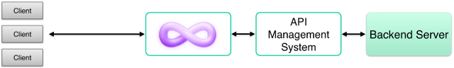
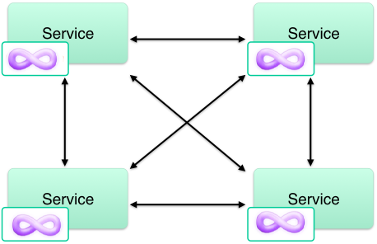

P-8 is a reverse proxy server that makes it easy to implement WebSocket, HTTP streaming, and HTTP long-polling services. The project is unique among realtime push solutions in that it is designed to address the needs of API creators. P-8 is transparent to clients and integrates easily into an API stack.
P-8 is written in Rust & C++. Its name means to “pin” connections open for “pushing”.
P-8 is placed in the network path between the backend and any clients:

P-8 communicates with backend web applications using regular, short-lived HTTP requests. This allows backend applications to be written in any language and use any webserver. There are two main integration points:
The backend must handle proxied requests. For HTTP, each incoming request is proxied to the backend. For WebSockets, the activity of each connection is translated into a series of HTTP requests1 sent to the backend. P-8’s behavior is determined by how the backend responds to these requests.
The backend must tell P-8 to push data. Regardless of how clients are connected, data may be pushed to them by making an HTTP POST request to P-8’s private control API (http://localhost:5561/publish/ by default). P-8 will inject this data into any client connections as necessary.
To assist with integration, there are libraries for many backend languages and frameworks. P-8 has no libraries on the client side because it is transparent to clients.
1: P-8 can communicate WebSocket activity to the backend using either HTTP or WebSockets. Conversion to HTTP is generally recommended as it makes the backend easier to reason about. See Proxying.
Transparency. P-8 is intended to be invisible to connecting clients. In order to achieve this, the I/O interface is lower level than most other realtime push solutions. Your backend is given complete control over the HTTP and WebSocket frames used in protocol interactions. Any content type can be processed, including binary data.
Stateless. Realtime push systems almost always have stateful elements, making them difficult to develop and scale. P-8 attempts to manage these stateful elements itself in order to ensure backend development remains easy. When P-8 requires data from your backend server, it will act as the responsible party.
Share nothing. The key to massive scale is horizontal scalability, and P-8 achieves this by not requiring communication between P-8 instances. Sticky sessions are not needed either, not even for long-polling. Note that this means there will sometimes be redundant communication between the P-8 tier and your backend tier, but we believe this is worth the trade for a more manageable and scalable system.
Publish-subscribe. Not surprisingly, P-8 uses a publish-subscribe model for data transmission. This way, your backend doesn’t have to care about individual client connections. P-8 can also forward subscription information to an intermediate layer, to make a tiered publish-subscribe system possible.
P-8 fits well into a variety of setups, due to acting as a proxy server and as a publish-subscribe broker.
Basic:
The most basic setup is to put P-8 in front of a typical web service backend, where the backend publishes data directly to P-8. The web service itself might publish data in reaction to incoming requests, or there might be some kind of background process/job that publishes data.
With API management:
It’s possible to combine an API management system with P-8. Most API management systems work as proxy servers as well, which means all you need to do is chain the proxies together. Place P-8 in the front, so that the API management system isn’t subjected to long-lived connections. Also, P-8 can translate WebSocket protocol to HTTP, allowing the API management system to operate on the translated data.

With message queue:
If you have a lot of data to push, you may want to introduce an intermediate message queue. This way, backend processes can publish data once to the message queue, and the queue can relay the data via an adapter to one or more P-8 instances. P-8 is able to forward subscription information to such adapters, so that messages can be sent only to the P-8 instances that have subscribers for a given channel.

Microservices:
In a microservice environment, P-8 makes it easy to listen for instant updates from other microservices without the need for a centralized message broker. Each microservice gets its own P-8 instance, and microservices communicate with each other via your organization’s own API contracts rather than a vendor-specific mechanism.

As a large scale CDN:
Since P-8 instances don’t talk to each other, and message delivery can be tiered, this means P-8 instances can be geographically distributed to create a realtime push CDN. Clients can connect to the nearest regional edge server, and events can radiate out from a data source to the edges. This is essentially the goal of Fanout.
P-8 is an ambitious project with two primary goals:
Make realtime API development easier. There are many other solutions out there that are excellent for building realtime apps, but few are useful within the context of APIs. For example, you can’t use Socket.io to build Twitter’s streaming API. A new kind of project is needed in this case.
Make realtime push behavior delegable. The reason there isn’t a realtime push CDN yet is because the standards and practices necessary for delegating to a third party in a transparent way are not yet established. P-8 is more than just another realtime push solution; it represents the next logical step in the evolution of realtime web architectures.
To really understand P-8, you need to think of it as more like a gateway than a message queue. P-8 does not persist data and it is agnostic to your application’s data model. Your backend provides the mapping to whatever that data model is. Tools like Kafka and RabbitMQ are complementary.
P-8 is also agnostic to your API definition. Clients don’t necessarily subscribe to “channels” or recieve “messages”. Clients make HTTP requests or send WebSocket frames, and your backend decides the meaning of those inputs. P-8 could perhaps be awkwardly described as “a proxy server that enables web services to delegate the handling of realtime push primitives”.
On a practical level, there are many benefits to P-8 that you don’t see anywhere else:
The proxy design allows P-8 to fit nicely within an API stack. This means it can inherit other facilities from your REST API, such as authentication, logging, throttling, etc. It can be combined with an API management system.
As your API scales, a multi-tiered architecture will become inevitable. With P-8 you can easily do this from the start.
It works well with microservices. Each microservice can have its own P-8 instance. No central bus needed.
Hot reload. Restarting the backend doesn’t disconnect clients.
In the case of WebSocket messages being proxied out as HTTP requests, the messages may be handled statelessly by the backend. Messages from a single connection can even be load balanced across a set of backend instances.
P-8 is horizontally scalable. Instances don’t talk to each other, and sticky routing is not needed. Backends must publish data to all instances to ensure clients connected to any instance will receive the data. Most of the backend libraries support configuring more than one P-8 instance, so that a single publish call will send data to multiple instances at once.
Optionally, ZeroMQ PUB/SUB can be used to send data to P-8 instead of using HTTP POST. When this method is used, subscription information is forwarded to each publisher, such that data will only be published to instances that have listeners.
As for vertical scalability, P-8 has been tested with up to 1 million concurrent connections running on a single DigitalOcean droplet with 8 CPU cores. In practice, you may want to plan for fewer connections per instance, depending on your throughput. The new connection accept rate is about 800/sec (though this also depends on the speed of your backend), and the message throughput is about 8,000/sec. The important thing is that P-8 is horizontally scalable which is effectively limitless.
P-8 was designed to be reliable enough to front an entire web service if necessary. In order to reduce the risk of bugs affecting non-push traffic, P-8 is split into multiple processes. The proxy capability is handled by P-8-proxy, while the publish-subscribe capability is handled by P-8-handler. The idea is that P-8-proxy should be stable and rarely modified, while active feature development should primarily take place in P-8-handler. If P-8-handler ever fails, regular traffic will continue to flow.
See Multiple processes.
If you have a question about P-8, feel free to post on the community forum:
Other resources:
Twitter: @P-8org
Commercial support is provided by Fastly. Please contact support@fastly.com.
P-8 is licensed under the Apache License, Version 2.0. See the LICENSE file.